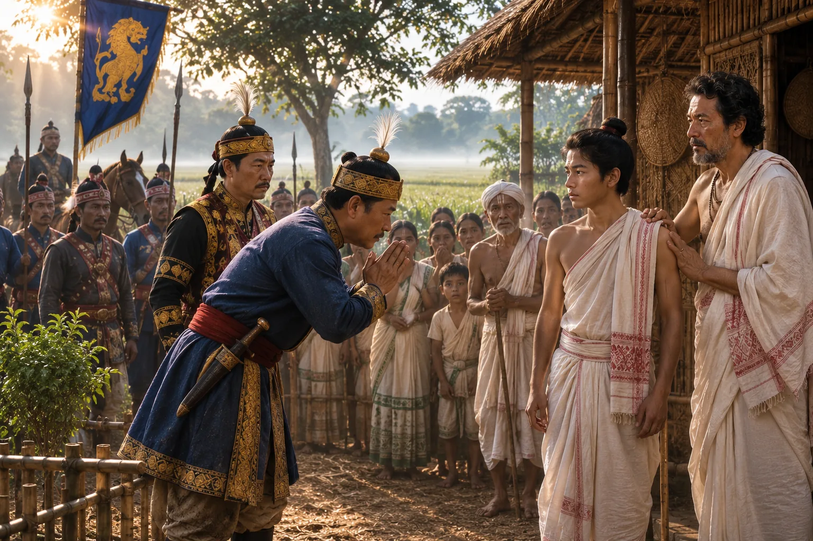

Ministers Discover the Hidden Prince Sudang at Habung
1397 · The coming of Sukaphaa

After eight years of search, the Burhagohain's emissaries locate the rightful heir Prince Sudang living as an ordinary cowherd at Habung.
Thao Cheoken found the prince; the Burhagohain brought him to Charaideo.
People: Sudangphaa (Bamuni Konwar), Thao Cheoken, Chaothai Khum Burhagohain
Open this scene in the interactive archive · Follow this event on MAP